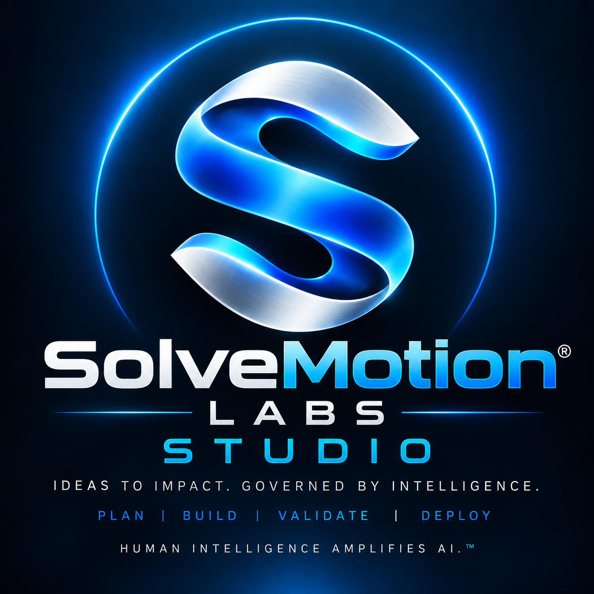

SolveStudio
Guided discovery, requirements and Blueprint preparation. The Studio Agent assists the process; humans approve consequential decisions.
Explore SolveStudio
Science. Intelligence. Solutions.
Learn, solve problems, and create real-world solutions — from the classroom to the enterprise.
AI accelerates the work.
Human intelligence provides the judgment.
SolveStudioGuided creation
 Core 12Shared intelligence
Core 12Shared intelligence
 SolvePharmacyHealth & science
SolvePharmacyHealth & science
 SolveMindCognition & learning
SolveMindCognition & learning
 SolveMotionMovement & learning
SolveMotionMovement & learning
 SolveCrimeInvestigation & learning
SolveCrimeInvestigation & learning
 Command CenterControlled execution
Command CenterControlled execution
Reasoning in RayAI. Shared deterministic intelligence in Core 12. Controlled execution in Command Center, subject to human authorization.
Discover Your Path
Choose the goal that best matches what you want to do right now. This starting point helps you continue into the existing SolveMotion Labs learning, application, building, or student journey.
This is an interest and goal assessment, not a career ranking, fit score, or prediction.
Selected goal
You selected .
Why this path:
Career exploration
Explore the areas, questions, and professional directions connected to each career family. Choose any card that interests you.
These cards are exploration tools, not career recommendations, rankings, fit scores, or predictions.
Selected career family
Your starting goal does not determine a career. Explore any family that interests you.
SolveMotion Labs connection
This connection is an exploration aid, not a career recommendation, ranking, fit score, or prediction.
You can explore any application in the SolveMotion Labs ecosystem. This connection does not determine which career or application you should choose.
Educational next step
This learning link is an exploration aid, not academic advising, a career recommendation, or a required path.
The problem
Signals live in different tools. Workflows drift. AI output can be hard to verify. Teams need a clearer path from evidence to action.
The platform
Core 12 owns shared deterministic intelligence. Apps stay focused. RayAI and Command Center make the ecosystem visible.
Governed intelligence spine.
Focused domain products.
Authorized project review.
Operational control.
Product ecosystem
Each product has a clear job. The ecosystem stays connected through shared governance and release discipline.
Connected systems with separate responsibilities.
Guided discovery, requirements and Blueprint preparation. The Studio Agent assists the process; humans approve consequential decisions.
Explore SolveStudioReasoning and review in an authorized project workspace, with existing sign-in and tenant access boundaries.
Explore RayAIShared deterministic intelligence and source-qualified knowledge contracts for connected applications.
Explore Core 12Windows-local operational control and evidence. Actions require their named authorization; this website grants no execution access.
Explore the operating modelEducational learning and review tools with human judgment.
Educational pharmacy, health and science exploration. Research and learning tools do not replace clinical judgment.
Explore SolvePharmacyEducational cognitive and psychology tools for learning and reflection, with human interpretation.
Explore SolveMindMovement learning, analysis and governed training context. Clinical outcomes and automated pose assessment are not implied.
Explore SolveMotionInvestigation-support and educational review, with privacy safeguards and decisions retained by people.
Explore SolveCrimeExplore the direction without assuming release availability.

Recovery and wearable-signal product direction. Availability and integrations remain under development.
Explore product directionBuild a fortress, guide survivors, craft supplies and explore a dangerous fantasy world. Development preview; downloads are not available.
Explore SolveThroneSolveMotion Labs ecosystem
Explore each product's responsibility. Select or focus a product to read its explanation.
Before
After
Use this guided path to move through the existing governed delivery, orchestration, human authorization, and Studio journey sections below.
See the governed delivery lifecycle.
2. OrchestrationSee how the existing governed orchestration sequence works.
3. Human authorizationSee where people authorize consequential action.
4. Representative project requestSee the representative request already shown in the existing Studio demonstration.
5. Requirements and planningSee how Studio organizes goals, requirements, constraints, and evidence before work advances.
6. Ownership boundariesSee how RayAI, Core 12, Studio, and Command Center divide responsibility across the governed workflow.
7. Human approval pointsSee the existing human approval points that gate consequential action.
8. Open StudioExplore public Studio. Protected work requires RayAI authorization.
Governed SDLC
Start with the problem, opportunity, or product idea worth solving.
Turn the idea into clear requirements, scope, ownership, and lifecycle truth.
Shape the experience, system boundaries, and implementation approach before execution.
Create through the established governed product and orchestration boundaries.
Verify quality, evidence, readiness, and known-good state before release.
Move forward only through explicit authorization, release discipline, and reviewable operational control.
SolveMotion Labs separates intelligence, lifecycle truth, orchestration, execution, and human authority so the public story stays clear without creating a second SDLC engine.
Validated baselines preserve known-good recovery points while release readiness and operational state remain reviewable through the governed project process.
AI and automation can accelerate analysis and preparation, but consequential build, deployment, release, and lifecycle changes require explicit human authorization.
Project Manifest owns authoritative lifecycle truth where established. Public pages explain that ownership without creating a second manifest or lifecycle engine.
Core 12 owns shared deterministic intelligence. RayAI owns governed reasoning and context where established. Studio orchestrates governed creation, and Command Center owns controlled execution, build, and release operations. The website explains these boundaries without implementing or duplicating them.
Governance architecture
Each part of the SolveMotion Labs ecosystem has a defined responsibility. The website explains the boundaries; it does not become another reasoning, intelligence, authorization, authentication, lifecycle, or execution owner.
Deterministic intelligence
Core 12 owns shared deterministic intelligence.
Governed reasoning
RayAI owns governed reasoning and context where that ownership is established.
Governed creation
Studio orchestrates governed creation without replacing established reasoning, intelligence, authorization, lifecycle, or execution owners.
Controlled execution
Command Center owns controlled execution, build, release, and operational command where established.
Lifecycle truth
Project Manifest owns authoritative lifecycle truth where established.
Human authority
Human authorization is required for consequential decisions and actions.
Deterministic intelligence, governed reasoning, and controlled execution are connected parts of the workflow, but they are not the same responsibility and they do not share one runtime owner.
Deterministic intelligence
Applies shared deterministic intelligence through established rules and repeatable logic.
Does not own: Governed reasoning, controlled execution, lifecycle truth, or consequential authorization.
Governed reasoning
Applies governed reasoning and context where that ownership is established.
Does not own: Shared deterministic intelligence, controlled execution, lifecycle truth, or consequential authorization.
Controlled execution
Owns controlled execution, build, release, and operational command where established.
Does not own: Governed reasoning, shared deterministic intelligence, lifecycle truth, or consequential authorization.
Core 12 deterministic intelligence can provide established inputs without becoming the reasoning owner.
RayAI governed reasoning can use established context and intelligence without becoming the execution owner.
Command Center can receive an authorized handoff for controlled execution without becoming the reasoning or deterministic-intelligence owner.
The website explains these relationships only; it does not perform reasoning, deterministic intelligence, or controlled execution.
The website explains these boundaries without implementing or duplicating their runtime ownership.
Governed multi-agent orchestration
Specialized intelligence stays coordinated without collapsing ownership into one agent or creating a second execution engine.
Orchestrates governed software creation across established product and lifecycle boundaries.
Provides governed reasoning and context where that ownership is established.
Owns shared deterministic intelligence used across the SolveMotion Labs ecosystem.
Owns controlled execution, build, release, and operational command where established.
Retains approval for consequential changes, execution, deployment, release, and lifecycle decisions.
Project Manifest remains authoritative lifecycle truth where established. It provides lifecycle context to the governed workflow; it is not presented as another runtime agent.
Studio demonstration
This representative demonstration shows how SolveStudio coordinates an approved project idea through the governed lifecycle without duplicating the live SolveStudio workspace, RayAI authorization, or Command Center execution.
The example stays descriptive. It does not submit a project, create an account, authenticate a user, authorize an action, or execute a build.

Studio captures proposed project intent and requirements for review. Project Manifest tracks project lifecycle after activation.
Goals, requirements, constraints, and success evidence are organized before consequential work proceeds.
Studio prepares architecture and experience direction while RayAI provides governed reasoning where that ownership is established.
Studio prepares governed creation state and handoff; Command Center remains the owner of controlled execution and build operations.
Testing, readiness, evidence, deterministic intelligence, and unresolved findings remain visible through their established owners.
Studio presents governed release readiness, but consequential release action remains subject to explicit human authorization.
This is an illustrative project journey. Start planning through the existing public SolveStudio entry; private project review requires RayAI authorization. The illustration does not submit a project or authorize development or release.
Next step
See the platform, review the products, or start a partnership conversation.